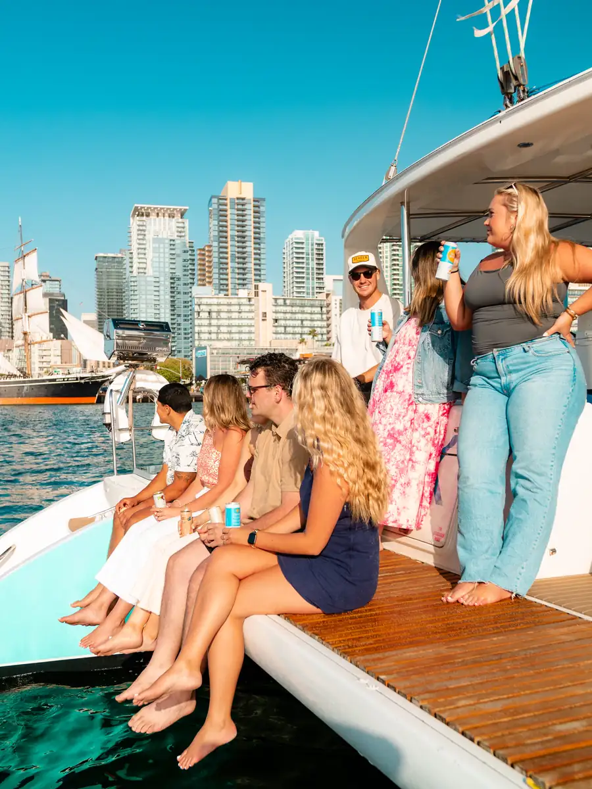
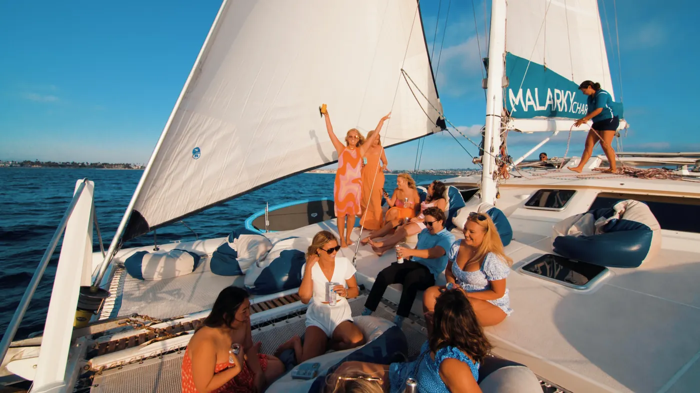

We don't run Black Friday sales. We don't run flash-discount weekends. The honest reason: charter rates already vary by date, day, season, and time of day, and layering a promotional percent-off on top of that variable rate just creates confusion. What we will do is tell you exactly where the structural value windows are — the midweek slots, the shoulder-season afternoons, the charter durations that hit the per-hour sweet spot, the water-toy bundles that beat à-la-carte add-ons — so if your date is flexible and budget matters, you know where to point your booking.
Below: midweek vs weekend, shoulder season vs peak, the 3-to-4 hour duration sweet spot, off-peak hour slots, the water-toy bundle logic, the per-guest cost-splitting math for groups, and where last-minute open slots actually surface (spoiler: the booking widget, not an email list).

The structural reality of San Diego charter demand: Friday, Saturday, and Sunday are weekend, and weekend carries a premium across every charter operator on the bay. Monday through Thursday is the inverse — lower demand, rates that reflect it, and substantially broader availability on short notice.
The midweek gap is widest on Saturday-evening peak slots in summer (where the weekend premium stacks with the sunset-hour premium) and narrowest on Sunday-morning shoulder-season slots. For most couples-only charters with flexible dates, a Tuesday or Wednesday evening saves enough off the weekend equivalent to comfortably fund a meaningful add-on — the full water-toys package, a photographer aboard, an extra hour of charter duration, the catered dinner upgrade. The savings don't vanish; they get redirected toward what makes your actual charter better.
Best fits for the midweek window: couples-only anniversary charters where the actual date is flexible, executive offsites with calendar control, value-conscious bookings of any kind, photographers who want bay-and-bridge shots without weekend boat traffic, mid-day water-toy charters with kids on school breaks, any booking where flexibility on date is the trade-off.
What midweek doesn't fit: weekend-locked events — weddings on specific dates, milestone birthdays tied to the actual calendar day, anniversaries on the actual anniversary date. For those bookings, the structural value isn't in the day-of-week; it's in season and hour-of-day (see below).
November through April is shoulder. May through October is peak. The structural reality: peak-season demand drives peak-season rates; shoulder-season demand softens, and rates reflect it. The bay's geography doesn't change — the Coronado Bridge frames the same sunset, Point Loma still silhouettes against the same horizon, the downtown skyline still lights up the same way as the sun drops. The only thing that changes is who's on the water.
November and February afternoons specifically are some of the cleanest sailing days of the year. Less wind chop. Better visibility on the bridge backdrop (peak summer haze isn't a factor). Substantially softer crowds on the water. Daytime temperatures usually 60-70F, which is a non-issue for the indoor air-conditioned lounge and entirely comfortable on deck once you're moving. For sunset charters specifically, the golden-hour color profile in winter months tends to be cleaner and more pink-toned because there's less particulate haze in the air than in summer.

Best fits for shoulder season: corporate offsites where the calendar isn't season-locked, anniversaries on non-summer dates, casual